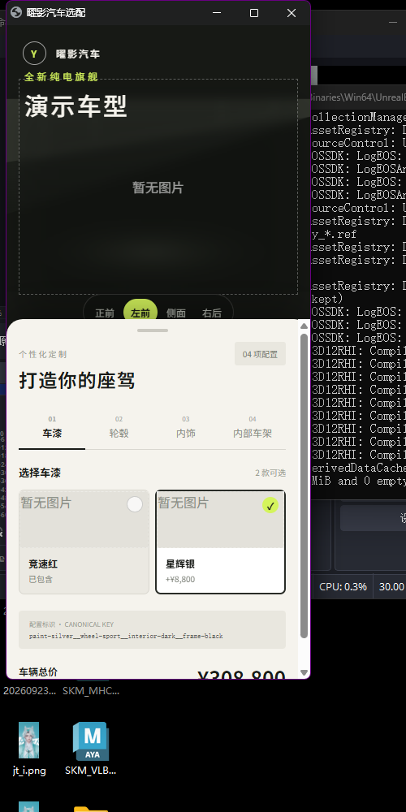
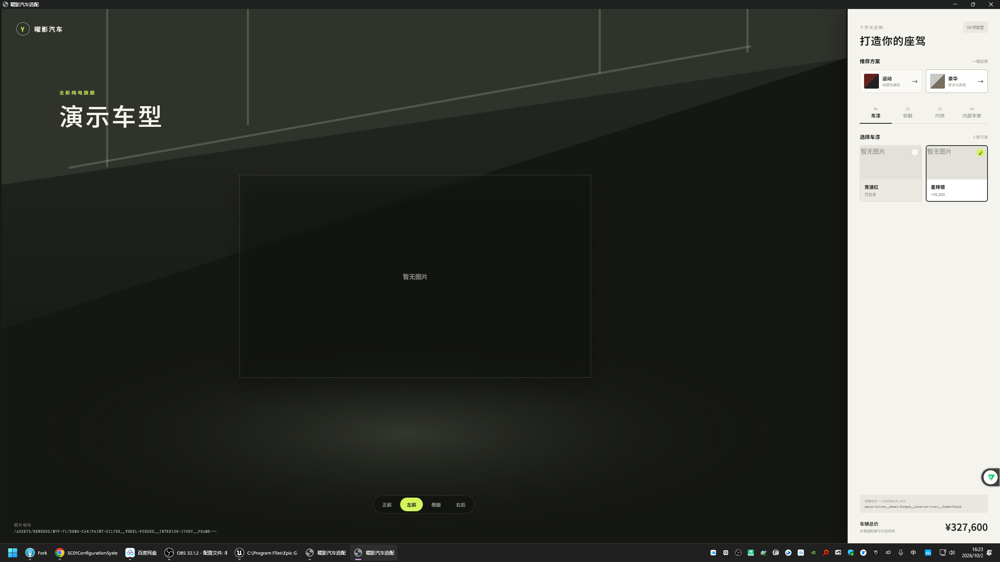
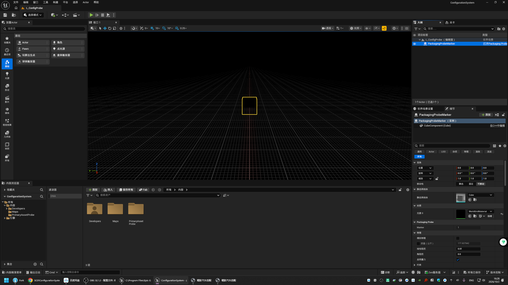
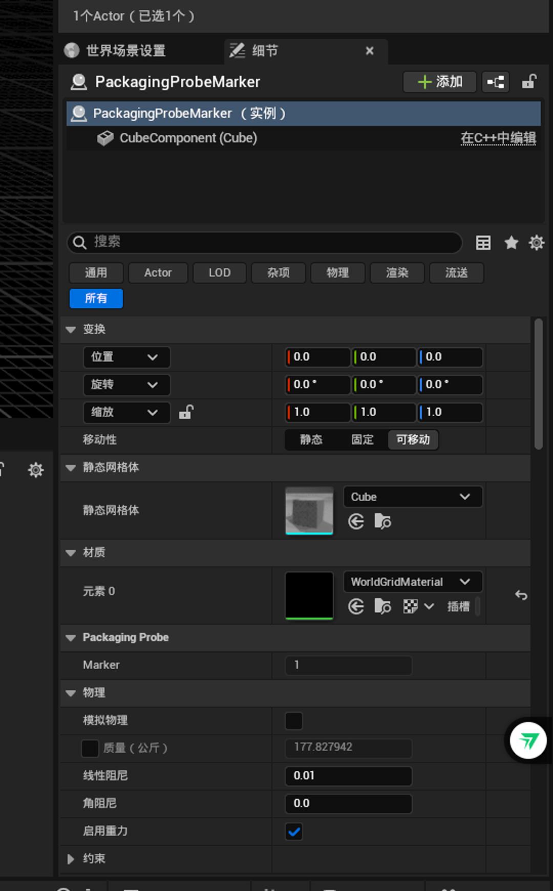
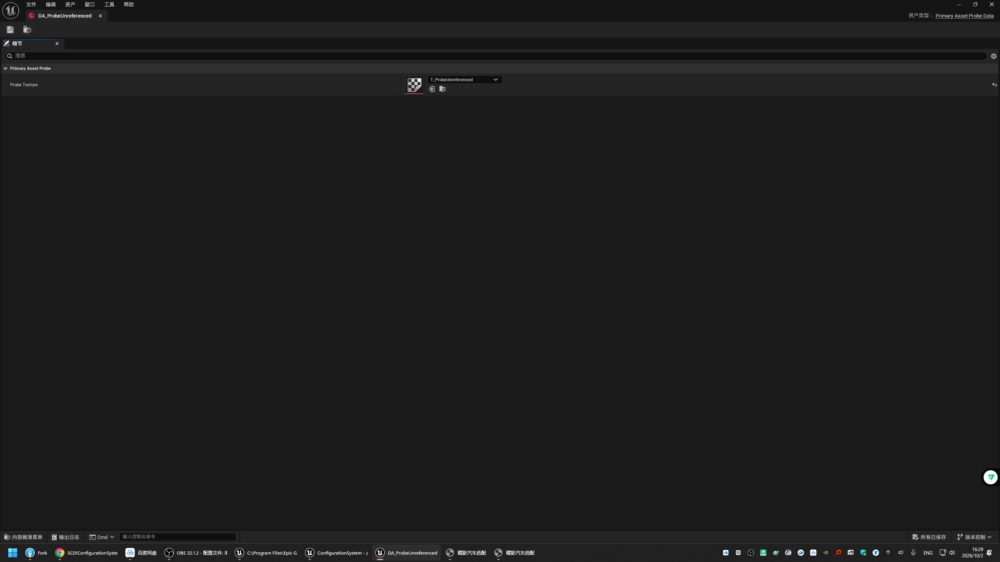

ConfigurationSystem 实现完整验收报告
既有 Server、Web 与 UE5.8 实现通过构建、真实联调、桌面及移动端 GUI、Editor 资产检查，以及 fresh Development/Shipping Cooked 包运行验证。未发现需要修改代码的功能缺陷。
结论摘要
契约与 Server
OpenAPI、12 项测试、构建与真实接口联调
Web GUI
桌面、手机、模板、分区、视角、价格与缺图降级
UE Editor
地图、Marker、组件、资产与模块边界
Cooked 包
Development 与 Shipping 均通过运行时探针
基线与联调
Server 测试
TypeScript 构建通过，依赖审计 0 漏洞
Web 测试
Vite 构建通过，依赖审计 0 漏洞
配置组合
8 个选项、2 个模板、4 个视角、64 个期望图片键
main 与 origin/main 差异为 0 0，验收前后均无代码修改。contracts/openapi.yaml 与 Server/Web 路由一致，包含健康检查、目录读取、渲染解析和版本化图片路径。paint__wheel__interior__frame；16 种组合唯一，价格与模板探针一致。Web GUI 验证
在真实 Chrome 应用窗口中分别以手机竖屏与桌面大屏操作。桌面“豪华模板”选中后总价更新为 ¥327,600，对应配置为银色车漆、锻造轮毂、象牙内饰与黑色框架；四个视角及四个配置分区均能逐项切换并保持状态。


UE Editor 验证
通过 UE5.8 Editor GUI 打开默认地图 /Game/Maps/L_ConfigProbe。World Outliner 中只有一个 PackagingProbeMarker，选中后 Details 显示 CubeComponent (Cube)、Marker = 1、位置与旋转为零、缩放为 1，Mobility 为“可移动”。



DA_ProbeUnreferenced 可正常打开，Probe Texture 指向 T_ProbeUnreferenced。探针与打包边界
| 检查项 | Development | Shipping |
|---|---|---|
| Build / Cook / Stage / Pak / Archive | 通过 | 通过 |
| Cooked Data | true | true |
| 启动地图 | /Game/Maps/L_ConfigProbe | /Game/Maps/L_ConfigProbe |
| Marker / Cube | 1 / 有效 | 1 / 有效 |
| Primary Asset / 软纹理 | 加载成功 | 加载成功 |
| Editor 模块存在 / 加载 | false / false | false / false |
| 归档文件 / Editor 泄漏 | 52 / 0 | 30 / 0 |
| 运行时探针 | success = true | success = true |
机器可读结果：Development JSON · Shipping JSON
其余技术探针复核结果：P0-1 Primary Asset 通过；P0-2 Path Tracing 采样重置与恢复通过；P0-3 PNG/EXR 与 Web Ready 通过；P0-4 层级与动作探针通过但仍等待真实车辆资产；ConfigurationState 验证 16 个唯一 key、价格和事件行为通过。
限制与风险
PROTOTYPE_PASS_ASSET_PENDING。现有结果证明审计器、标签规则与动作流程有效，但不能替代整车拓扑、Pivot、材质槽、穿模和最终视觉检查。
-editor 的启动在引擎初始化阶段触发 UObjectArray.h 断言；使用明确的 -editor -log 后 Editor 稳定启动。当前开发流程应保留显式 -editor 参数，并将该异常视为引擎启动方式风险而非已复现的项目功能缺陷。
最终判定
当前实现满足现阶段骨架与技术探针验收要求。 Server/Web/UE 三端契约一致，桌面和移动端交互符合预期，UE 资产与默认地图配置正确，Development 与 Shipping 的 Cooked 包边界可靠。由于没有发现代码缺陷，本轮没有产生修复提交；后续验收重点应放在真实车辆资产和正式 64 张渲染图接入。